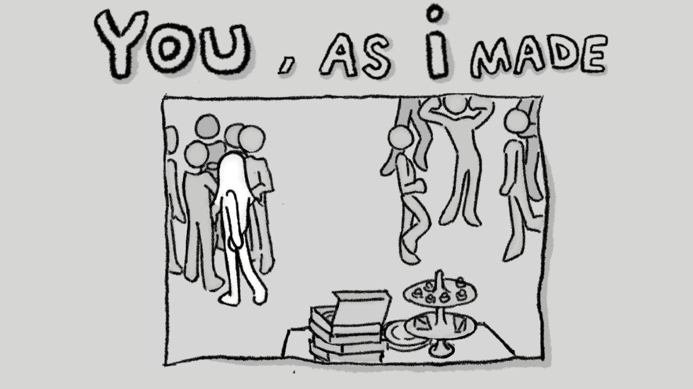

Gameplay UX
My UX design work focuses on creating intuitive and engaging interactive experiences. I apply user-centered design and design-thinking methods to understand user behavior, identify friction points, and improve interaction flows. My projects explore accessibility, usability, and gameplay-inspired interaction design across digital products and interactive media.

Environmental UX
Player Onboarding & Exploration
A gameplay environment designed to guide player learning through spatial composition, visual cues, and interaction rather than traditional tutorials.
Learn more
Environmental UX
Player Guidance in VR
Designed environmental cues and spatial flow to guide player interaction without traditional UI. Implemented diegetic onboarding through environment storytelling and interaction feedback.
Learn more
Interaction UX
Gamified Personality Test
A gamified personality test built during the Gamerella Game Jam. As the UX/UI designer, I created the interaction flow and hand-drawn interface to reinforce the Human-Made theme.
Learn more